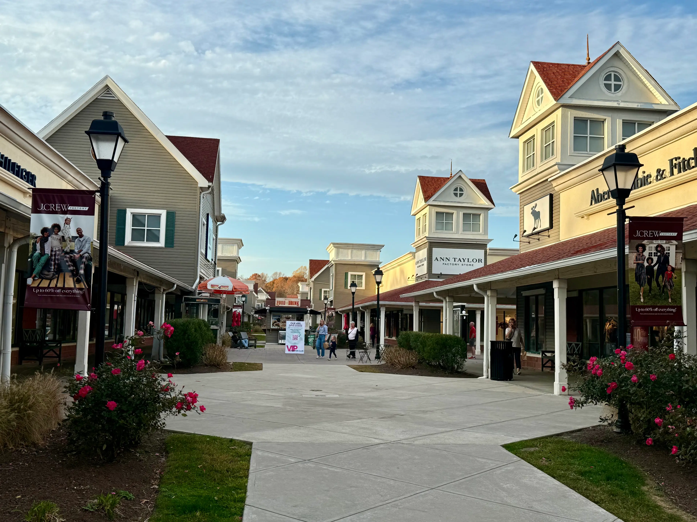
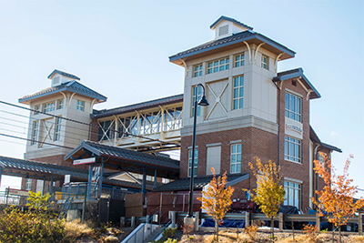

Clinton CT Undergoes Many New Developments
Community Upgrades and New Businesses
Written By: Kayla Loth
Published: 2026
The town of Clinton CT is investing in upgrading their town to better serve the community. Changes include repaving roads and sidewalks, demolishing old buildings to make way for new development such as Big Y grocery store and a new urgent care clinic.

During the summer of 2024, the town of Clinton, CT began the series of changes starting with the demolition of an old factory to make way for a brand new apartment complex. Their second project just across the street was building another platform for the Shoreline East Train.

Clinton continued its development in 2025 by adding a shopping plaza right off the highway. This plaza includes a starbucks, a furniture store, an urgent care center and a Big Y grocery store.

Now in 2026 the town plans to rebuild the bridge to the beach and has already started making progress of repaving roads and adding new sidewalks.The town of Clinton, CT is also working on repaving the roads and sidewalks to make it easier for pedestrians to walk around town.